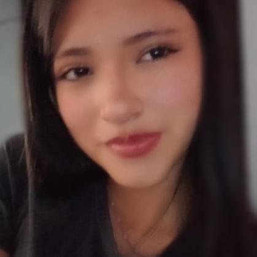
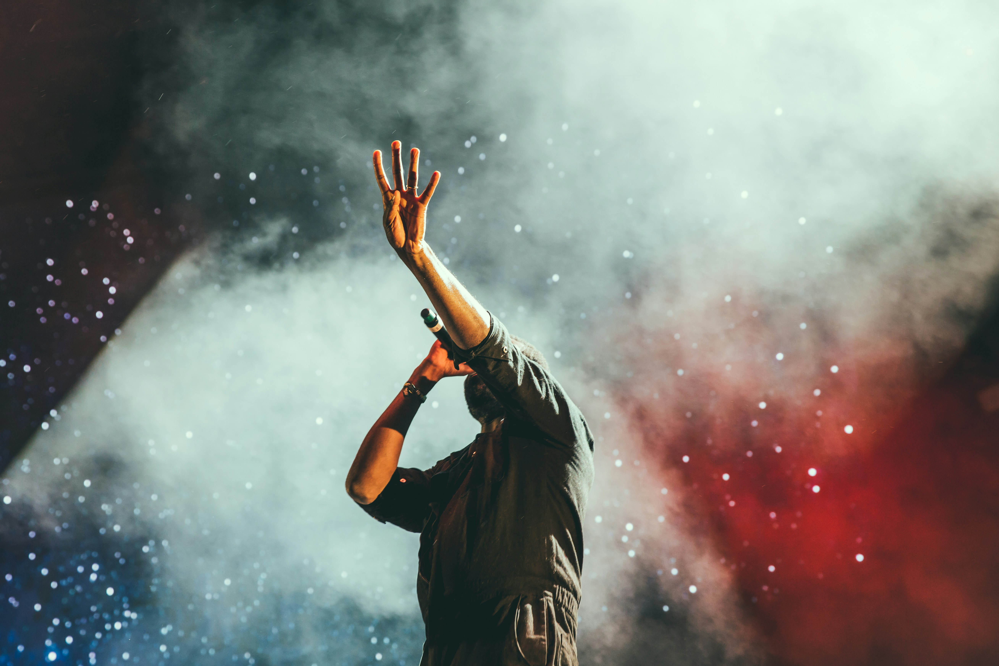
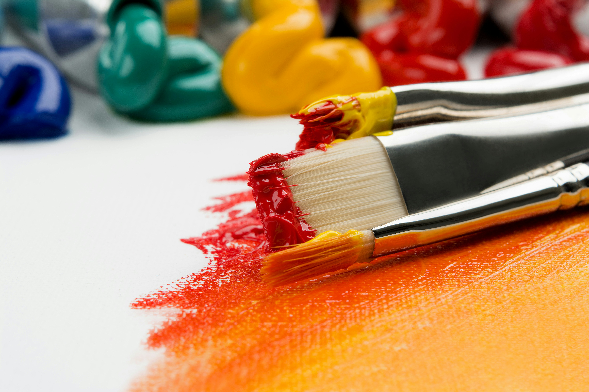

Soy una persona a la que le gusta la música, el arte, los libros y las películas románticas. Disfruto descubrir nuevas experiencias, aprender cosas interesantes y pensar en todas las metas que quiero alcanzar en el futuro.
“Cada detalle cuenta una parte de mi historia”.

La música forma parte de mi vida y está presente en muchos momentos importantes. Me ayuda a concentrarme, relajarme y disfrutar aún más cada día.
Algunos de mis artistas favoritos son The Neighbourhood, The Weeknd, Chase Atlantic y Doja Cat.
Cada canción tiene la capacidad de transmitir emociones diferentes y acompañarme según mi estado de ánimo.
Me gusta dibujar y expresar mi creatividad a través del arte. Entre los artistas que más admiro se encuentra Claude Monet, debido a la belleza de sus paisajes y el uso de colores que transmiten tranquilidad y emoción.
También disfruto leer libros y ver películas románticas. Las historias me permiten imaginar, aprender y conectar con diferentes emociones y experiencias.
Una parte muy especial de mi vida es mi gatita Eris, quien llegó en 2023 y desde entonces se ha convertido en una compañera llena de cariño y momentos inolvidables.

Quiero terminar el colegio y continuar mis estudios en la universidad para seguir creciendo tanto personal como profesionalmente.
Me interesa estudiar Relaciones Internacionales porque me gusta conocer otras culturas, aprender sobre los países del mundo y comprender cómo se relacionan las personas y las sociedades.
Uno de mis mayores sueños es estudiar en Francia, vivir nuevas experiencias y conocer más de cerca su cultura, historia y tradiciones.
“Paso a paso, voy construyendo mi futuro”.